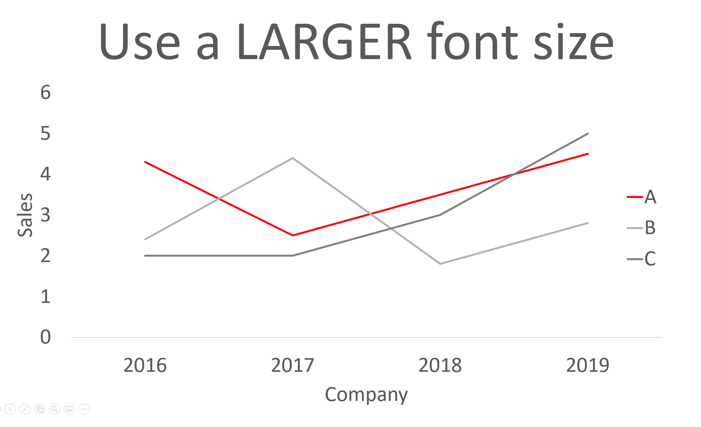
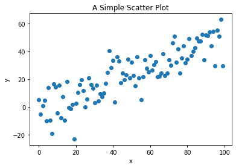
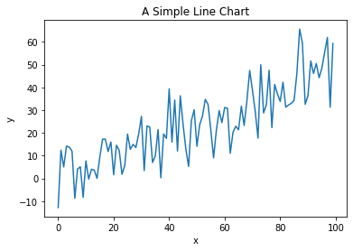
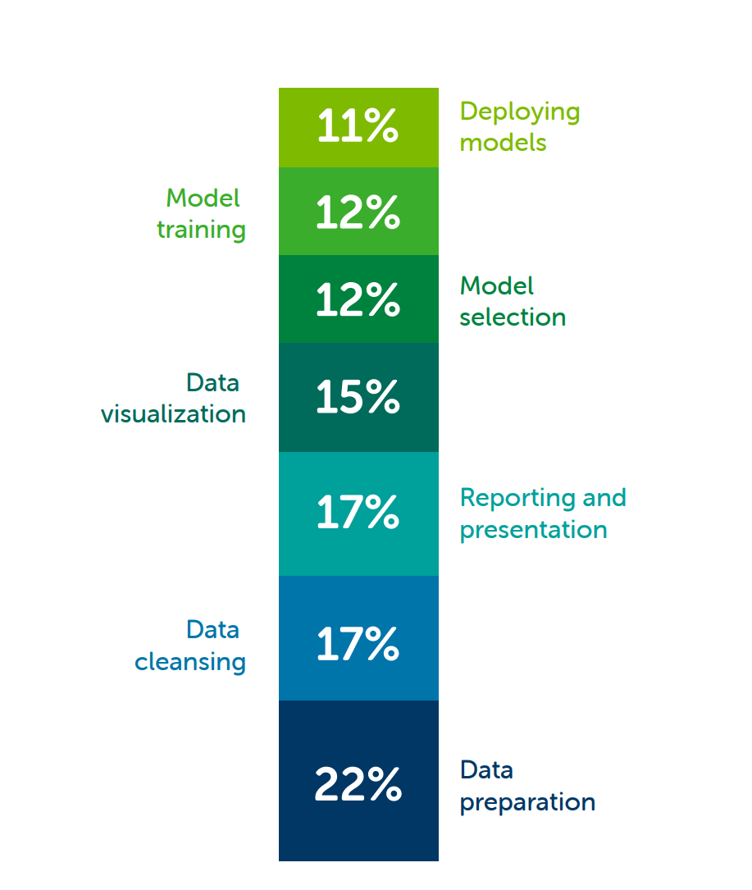
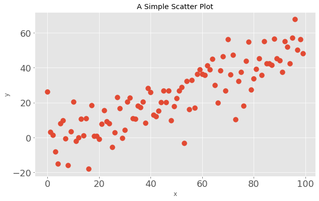
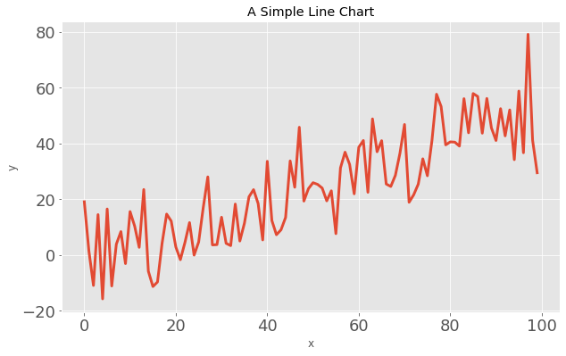
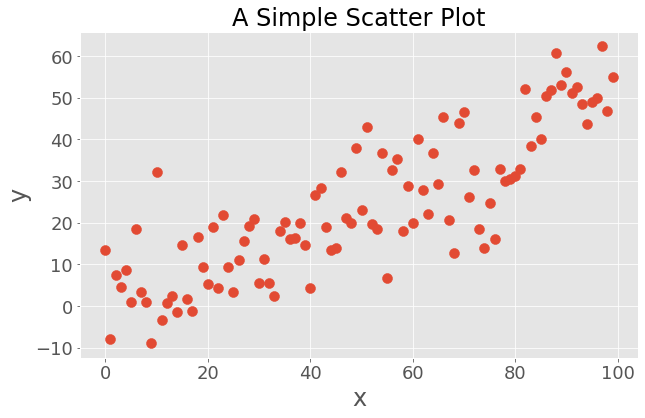
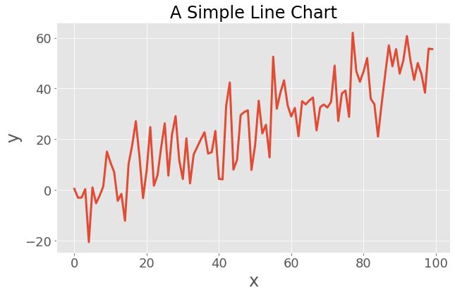
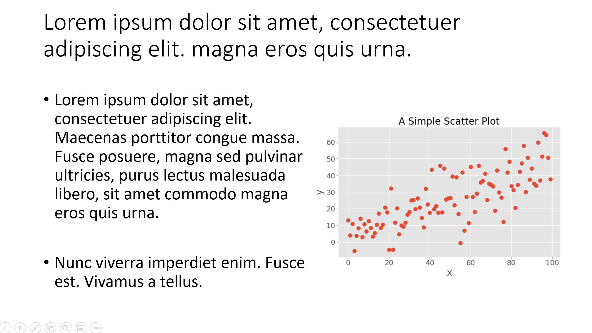

Are you tired with fiddling with every single python plot and you always forgot how to configure matplotlib? Start creating your own matplotlib style or just use this. [Updated on 17-07-2022]

Large Font Size Title
In reality, you probably don’t need a title as big as this one. But using library defautls often is not the best choice.
#hideimport matplotlibfrom matplotlib import pyplot as pltimport numpy as npmatplotlib.matplotlib_fname()%load_ext autoreload%autoreload 2
Bad key axes.location in file C:\Users\lrcno\miniconda3\envs\kedro\lib\site-packages\matplotlib\mpl-data\stylelib\presentation.mplstyle, line 4 ("axes.location: 'left'")
You probably need to get an updated matplotlibrc file from
https://github.com/matplotlib/matplotlib/blob/v3.5.2/matplotlibrc.template
or from the matplotlib source distribution
#collapse-hidedef make_scatter_plot(): num_points =100 gradient =0.5 x = np.array(range(num_points)) y = np.random.randn(num_points) *10+ x * gradient fig, ax = plt.subplots() ax.scatter(x, y) ax.set_title('A Simple Scatter Plot') ax.set_xlabel('x') ax.set_ylabel('y') plt.show()def make_line_plot(): num_points =100 gradient =0.5 x = np.array(range(num_points)) y = np.random.randn(num_points) *10+ x * gradient fig, ax = plt.subplots() ax.plot(x, y, '-') ax.set_title('A Simple Line Chart') ax.set_xlabel('x') ax.set_ylabel('y') plt.show()
The Problem of library defaults
make_scatter_plot()make_line_plot()


Your insight is as best as your audience understand. According to Anaconda State of the Data Science 2021, data scientist spend almost one third of their time for data visualization, report and presentation. Human perception is largely based on visual, a easy-to-read chart is much more likely to sell your idea with a custom matplotlib pyplot chart. 
There is nothing wrong with matplotlib, it is custom for a user sit in front of a monitor. When it comes to presentation, you really should make some adjustment for your audience. If your organization is big enough, you may also consider to create a theme that shared across the organisation to style it consistently, qbstyle is one of the examples.
For typical data practitioner, it’s easy to start with the following tips.
Apply matplotlib theme
with plt.style.context('ggplot'): # Or plt.style.use('presentation') for global setting make_scatter_plot() make_line_plot()
Much better right?
There is nothing wrong with the chart if you are viewing it in front of your monitor. However, this is not PowerPoint ready as the font size are too small for a presentation. Adjusting font size manually is a painful process, instead, you could have preset theme to automate this process.
Make PowerPoint-ready charts
Luckily, there is some easy way to prepare PowerPoint-ready charts. I created a presentation.mplstyle file as follow. This is not a perfect theme, but it’s a good starting point and you can finetune the parameters to build your custom theme.
Once we have the presentation theme ready, we can start composing it with the ggplot to build charts.
Note: You need to create a presentation.mplstyle file and copy it to a location that matplotlib can find. You can follow the steps below to create your own presentation.mplstyle
#hideimport matplotlibfrom pathlib import Pathstyle_dir = Path(matplotlib.__path__[0]) /"mpl-data/stylelib"# It stores under the matplotlib sub-directory mpl-data/stylelib/presentation_theme ="""axes.titlesize : 24axes.labelsize : 24axes.location: 'left'lines.linewidth : 3lines.markersize : 10xtick.labelsize : 18ytick.labelsize : 18figure.figsize : 10, 6figure.titlesize: 24"""withopen(style_dir/"presentation.mplstyle", "w") as f: f.write(presentation_theme)
with plt.style.context(['presentation', 'ggplot']): make_scatter_plot() make_line_plot()


If you are careful enough, you will notice the font size of the title is not correct. This is because ggplot theme overwrite my theme. To make it right, you just need to switch the order so that your theme will overwrite conflict settings.
with plt.style.context(['ggplot', 'presentation']): make_scatter_plot() make_line_plot()


I actually disable the grid in my presentation theme, which conflicts with fivethirtyeight configuration. If conflict configs exist, it resolved base on your order. See the same plot with ‘presentation’,‘fivethirtyeight’ in reverse order.
To give you a sense how this affect your presenation, I put it into a Powerpoint, see if you feel the difference.
ppt_low_res_01.png

ppt_high_res_02.png
Avoid Low Resolution Chart
Note: Believe it or not, a low resolution chart looks much less conviencing. Taking screenshot with larger charts helps you to preserve the resolution.
Resolution of the chart is much better
More obvious Title & Label (Try take a few step back from your monitor, see if you can read it)
Define Once, Use Everywhere
It could be troublesome if you need to define the same file over and over in different computer/environment. You can actually use a URL. I have put my own theme in GitHub so I can always access it from anywhere.